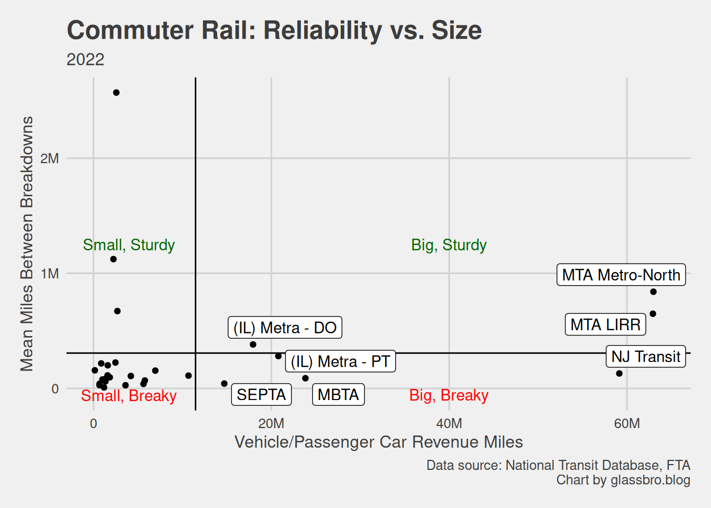
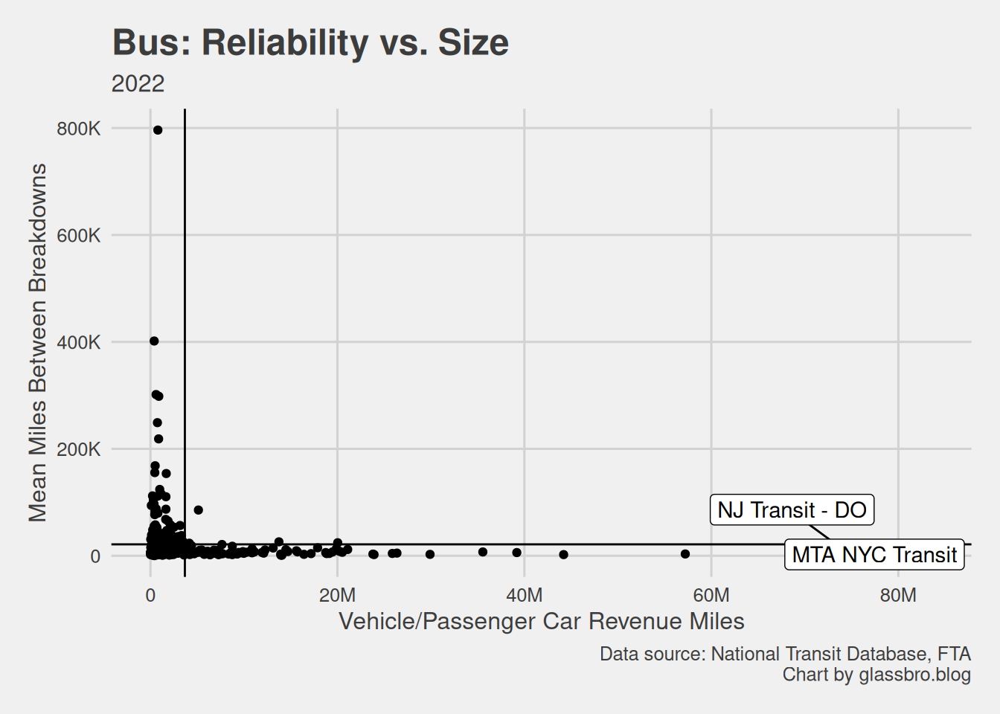
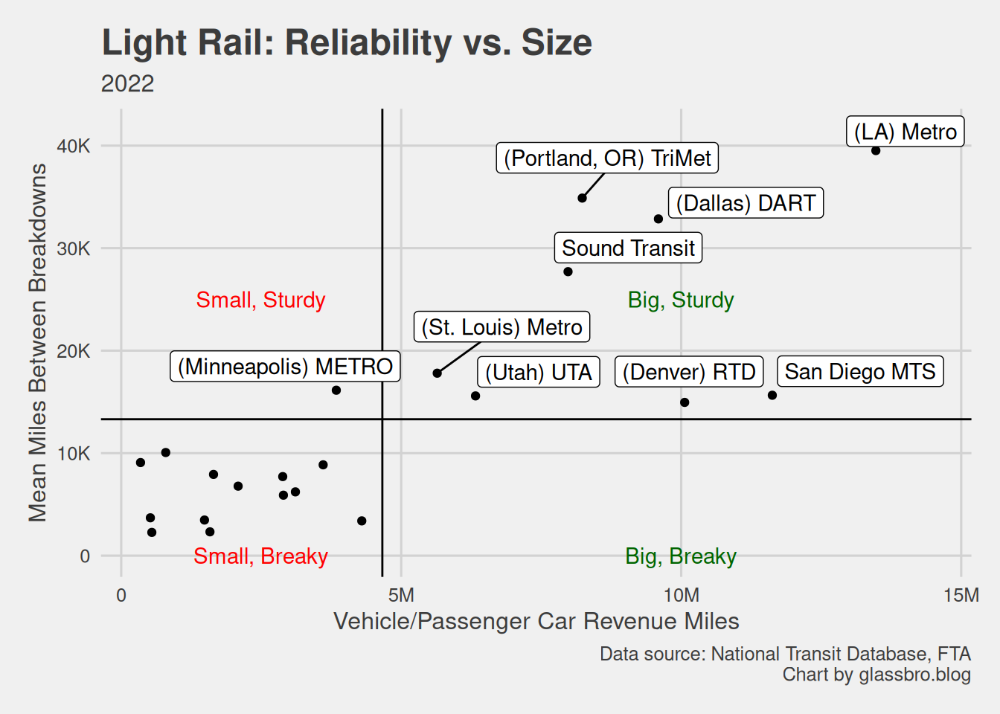

Commuter Rail Reliability Rankings, 2022
Data source: National Transit Database, FTA
December 9, 2023
December 10, 2022
The FTA just released its 2022 National Transit Database, so let’s start an annual holiday tradition of ranking transit agencies for breakdown frequency. I’ll also compare the 2022 rankings to my 2021 rankings, and display my usual extreme New Jersey bias.
Note: Some services, like NJ Transit Bus, have 2 records: One for Purchased Transit (PT) that’s contracted out, and one for Directly Operated (DO) transit.
The Northern New England Passenger Rail Authority (NNEPRA) still operates the most reliable commuter rail (CR) service: The Downeaster from Brunswick, Maine, to Boston with just 5 daily round trips.
Metro-North and the Long Island Railroad (LIRR), running the largest and 2nd-largest CR services, respectively, held onto 3rd and 5th place, respectively. They’re just excellent trains by this standard, especially considering how many miles they travel every year.
Data source: National Transit Database, FTA
As usual, I find it useful to focus on the largest services. It doesn’t always make sense to compare huge agencies serving big cities or entire states, like the MTA or NJ Transit, to smaller ones like Minneapolis’s METRO.
Not much changed in these “peer” rankings since 2021. Denver’s RTD was in this group in 2021, but they must have severely scaled back operations, because now they’re out and the Maryland Transit Administration is in–and the 2nd-least reliable at that. MBTA and NJ Transit moved up 1 spot, with NJT overtaking California’s Metrolink. SEPTA fell 2 spots to the bottom.
The Amazon gift card for Most Improved Commuter Rail goes to the Virginia Railway Express, which connects North Virginia towns to Washington, DC. Their rank jumped 9 spots in one year, from 11th to 2nd place!
The 2022 Breaky Award for CR is shared by SEPTA and Penn DOT, who both slid 8 spots down the rankings. Penn DOT in particular fell from 2nd to 10th place! Suburban Pennsylvania commuters had a bad 2022.
Data source: National Transit Database, FTA
NJ Transit had a bad year. Although they moved up the reliability rankings, they broke down, on average, about every 130,000 miles, more often than in 2021 (see the “Ranking Changes” table). So NJT got worse, but other services got even worse.
Plotting this, we see that NJT is still considered “Big and Breaky,”1 breaking down much more often than its similarly sized peers, Metro-North and the LIRR.2

We could say that NJT is making the best of a bad situation–under-funding, a fiscal cliff, raiding its capital budget to fund operations for years–but it’s not turning around.
But imagine if we properly funded this thing! NJ Transit’s commuter rail ranks in the middle for breakdown frequency, despite years of capital under-investment. If you actually want to fix NJT, fund it.
NJ Transit Commuter Rail Takeaways
|
There were 448 bus services in 2022, from the tiny Capital Area Transportation Authority based in Lansing, Michigan, to New York City’s MTA.
Data source: National Transit Database, FTA
Let’s focus on the 10 largest bus services. Once again, New Jersey Transit is #1, baby! Compared to 2021, MTA improved remarkably, unseating DC’s WMATA for 2nd place and threatening to overtake NJ Transit next year. Other than Atlanta’s MARTA falling to the bottom behind Chicago’s CTA, nothing else changed here.
Looking at all 448 bus services again, we see mostly smaller concerns made the biggest gains. As for my general area: I never heard of the Bergen County Community Transportation agency based in Hackensack, NJ, but it shot up 232 places in the reliability rankings!
Data source: National Transit Database, FTA
NJ Transit reports 2 bus services: Directly Operated (DO) and Purchased Transit (PT). Their PT is more reliable than their DO, but their DO runs way more miles and, as we saw, is more reliable than similarly big bus services.
In any case, all of NJT’s buses break down less often than they did in 2021. Few folks are brave enough to praise NJ Transit’s buses, but I am–at least for their breakdown (in)frequency.
The only thing is, NJT fell in the rankings among all bus services, and it’s still less reliable than average (see the crowded scatter chart below). So while NJT bus beats its similarly sized peers, it’s middling among all bus services, big and small–though I’m not sure that’s a fair comparison.

NJ Transit Bus Takeaways
|
LA’s Metro is once again the best among all 22 light rail services and the 10 largest.
Data source: National Transit Database, FTA
Curiously, the bigger the light rail service, the more reliable it tends to be. I won’t dig into this potentially spurious correlation; it’s just a “huh” moment, as no such pronounced correlation exists for commuter rail or bus.

St. Louis’s Metro improved the most, shooting up 6 places from 11th to 5th most reliable. The Valley Metro Rail in Phoenix, Arizona, on the other hand, plummeted 10 places from 7th to 17th, the worst such fall of the year.
Data source: National Transit Database, FTA
NJ Transit reports two light rail services to the FTA: The Hudson-Bergen LR, which is Purchased Transit (PT), and a combined record for the Directly Operated (DO) River Line and Newark LRs.
The River Line and Newark LR are together now in 18th place out of 22, up 3 places from 2021. Meanwhile, the Hudson-Bergen LR is 15th, up from 17th. They’re still among the least reliable, but I’ll take improvement.
NJ Transit Light Rail takeaways
|
As you can see, light rail in New Jersey isn’t doing well. Past reporting unfortunately, mistakenly praised NJT’s light rail services as among the best in the country, so their issues aren’t recognized. The Hudson-Bergen Light Rail doesn’t actually go to Bergen County, and the 30-year effort to extend it there just hit another obstacle. The Glassboro-Camden Line’s future is a bit uncertain as it lacks a loud champion in the state legislature and the NIMBYs are organized.
WMATA, which runs the Metro in Washington, DC, is once again the most reliable. The Maryland Transit Admin got bumped out of the top 10 by Atlanta’s MARTA, but not much is new beyond that. Miami’s Transportation and Public Works runs the least reliable heavy rail among all 15 in the country and the 10 largest.
Data source: National Transit Database, FTA
WMATA retained its title, but it breaks twice as often: Every 176,500 miles in 2022 vs. every 357,000 or so in 2021.
Atlanta’s MARTA and the Staten Island Railway rose the most up the ranks and actually got more reliable. PATH, on the other hand, dropped from 4th to 6th place and breaks down more often–so much for all those weekend repairs.
Data source: National Transit Database, FTA
NJ Transit doesn’t have heavy rail, but 2 other agencies run HR in New Jersey:
In one year, PATH got much less reliable. In 2021 the average PATH train ran 70,569 miles before breaking down; in 2022 that fell -33.8% to 46,712.
PATCO also suffered, but less dramatically: Falling from 17,838 mean miles between breakdowns in 2021 to 15,506 in 2022, a -13.1% drop.
As for ranking, PATH is 6th most reliable of all 15 heavy rail services and 5th among the 10 largest. Not bad. Indeed, when we plot reliability against size, PATH falls into the “Small and Sturdy” upper right quadrant, being more reliable and running fewer miles than average.
Zooming in on the lower left quadrant of “Small and Breaky” trains, we find PATCO. It’s 10th most reliable out of 15. But at least it performs better than the similarly sized Maryland Transit Admin.
PATH & PATCO takeaways
|
It’s fun to rank transit. I hope people all over the country find this interesting. But now I must address my fellow New Jerseyans:
Instead of investing in public transit, our leaders prioritize private vehicles and commit climate arson (but also put out the fires). The NJ Department of Transportation and the NJ Turnpike Authority are spending tens of billions to widen and expand highways, which will only make us more car-dependent and less likely to ever change. Instead, the state could spend much less on public transit projects that have languished in the pipeline for decades.
Please sign the petitions against expanding the NJ Turnpike in North and South Jersey and check out the Effective Transit Alliance’s list of transit investments we should make instead. Contact your state representatives, urging them to properly fund NJ Transit.
According to my completely made-up definition of Breaky: Breaking down more often than average. And by Big I mean it runs more vehicle or passenger car miles in revenue service than average.↩︎
A previous version of this post erroneously said NJ Transit was now “Big and Sturdy” because I messed up some code. Sorry about that.↩︎